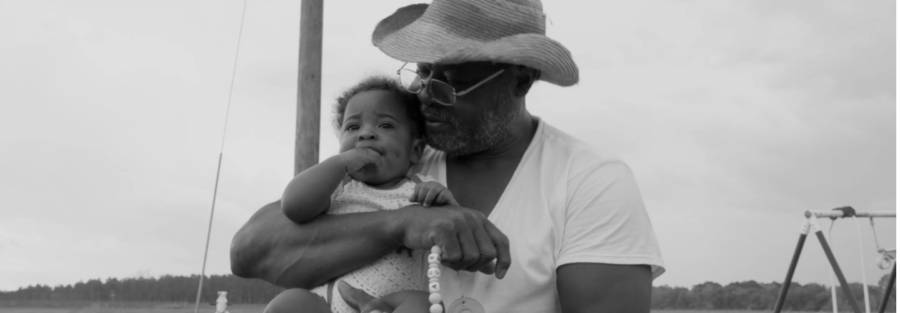

SEEDS (2025) with Brittany Shyne in-person
In Brittany Shyne’s debut film SEEDS, reverent attention is given to the rhythms of daily life for Centennial Black farmers in the American South. As a solo cinematographer-director with a commitment to deep placemaking, Shyne returned to the land of three families in Georgia and Mississippi over nearly 10 years, taking time to be present to its subjects as life unfolds in small moments—from washing vegetables and shelling pecans for market, saving ancestral seeds, to sharing candy from grandma’s purse on the way to a funeral. While witnessing the persistence needed to tend legacies of land ownership for African-American families who face the challenges of inequity in funding systems and cultural shifts, SEEDS celebrates the tenacity of its elders and revival of efforts by new generations of farmers working together to make a path forward.
Following the screening, Shyne will be in conversation with Northwestern University faculty in RTVF, the MFA in Documentary Media, and the audience.
The Block Museum is proud to partner with the MFA in Documentary Media, the Department of Radio, Television, and Film, and the School of Communications at Northwestern to welcome Brittany Shyne as a 2026 Hoffman Visiting Artist for Documentary Media.
About the artist:
Brittany Shyne is an independent filmmaker based in Dayton, Ohio. Working in the narrative and non-fiction artform, her work seeks to depict the complexity of everyday life by examining themes such as personal histories, alienation and cultural modernization. By utilizing observational techniques and poetic language, her films lyrically weave together frameworks of race, class, culture and family lineage. Her debut feature, Seeds, recently premiered at the 2025 Sundance Film Festival, where it received the esteemed U.S. Documentary Grand Jury Award.She also works as a cinematographer on films such as The Debutantes (Tribeca, ‘24), This Time, This Place, (Tribeca, ‘21), and Julia Reichert and Steve Bognar’s academy award-winning film American Factory 美国 工厂(Sundance ‘19). Shyne was the recipient of the 2021 Artist Disruptor Award from the Center of Cultural Power. Her work has received institutional support from Sundance, Black Public Media, Cinereach, ITVS, IDA, Doc Society’s Threshold Fund, Just Films | Ford Foundation, BAVC, The Flies Collective, The Puffin Foundation, The Points North Institute and SFFILM. The film has also participated in the inaugural PROGRESSIO lab in conjunction with ICA London and Cineteca Madrid, True/False’s PRISM program, Open City’s Assembly Development Lab, and the Catapult & True/False Rough Cut Retreat.
She is an alumni of the Chicken & (Egg)celerator Lab and was a Firelight Media Documentary Fellow (2020-2022). Shyne received her MFA in Documentary Media from Northwestern University and a BFA in Motion Pictures from Wright State University.